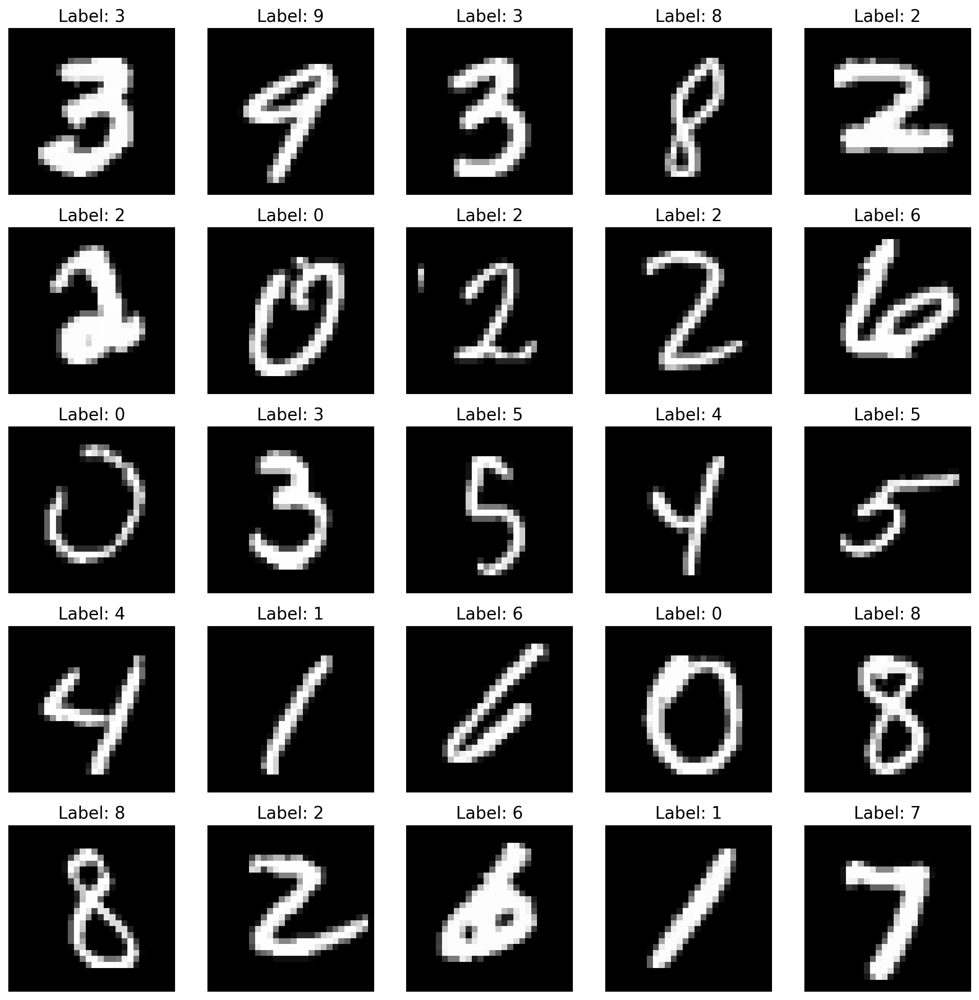
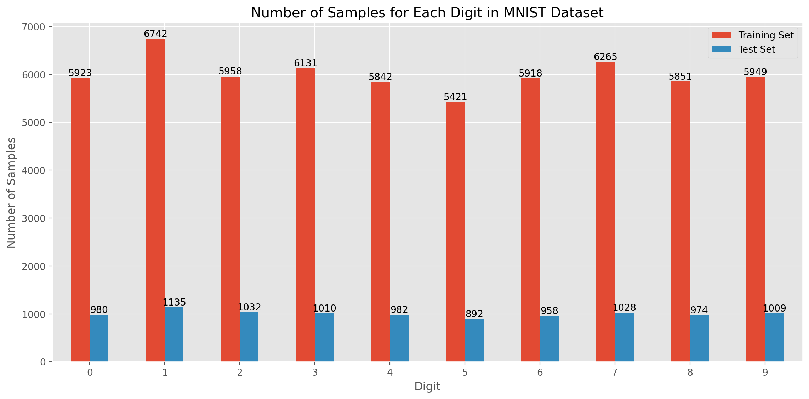
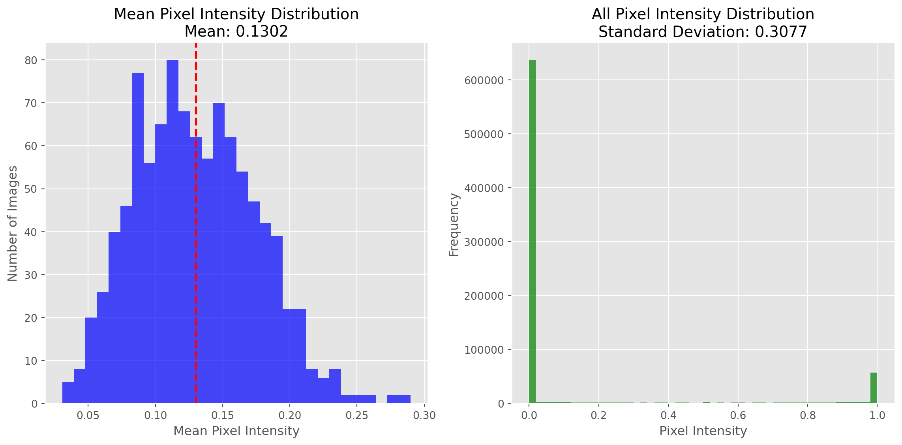
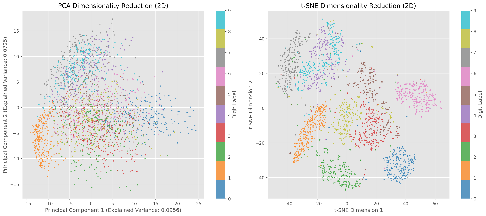
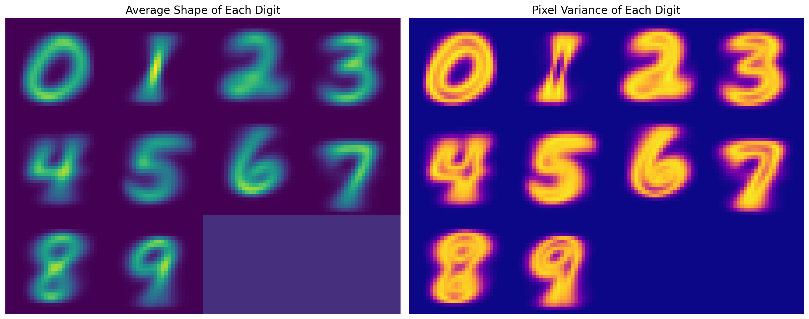
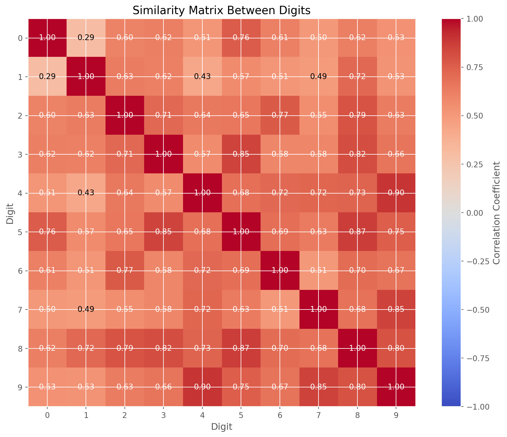

This document explores the characteristics and statistics of the MNIST dataset. We will load the data and perform visual analysis.
Loading Data
First, we need to import the necessary libraries and load the MNIST dataset.
Code
import sysimport osimport numpy as npimport matplotlib.pyplot as pltimport torchfrom torchvision import datasets, transformsimport pandas as pdfrom sklearn.decomposition import PCAfrom sklearn.manifold import TSNE# Set matplotlib styleplt.style.use('ggplot')
/Users/zephyr/Developer/temp/mnist/.pixi/envs/default/lib/python3.10/site-packages/torchvision/io/image.py:14: UserWarning: Failed to load image Python extension: 'dlopen(/Users/zephyr/Developer/temp/mnist/.pixi/envs/default/lib/python3.10/site-packages/torchvision/image.so, 0x0006): Library not loaded: @rpath/libjpeg.9.dylib
Referenced from: <0B7EB158-53DC-3403-8A49-22178CAB4612> /Users/zephyr/Developer/temp/mnist/.pixi/envs/default/lib/python3.10/site-packages/torchvision/image.so
Reason: tried: '/Users/zephyr/Developer/temp/mnist/.pixi/envs/default/lib/python3.10/site-packages/torchvision/../../../libjpeg.9.dylib' (no such file), '/Users/zephyr/Developer/temp/mnist/.pixi/envs/default/lib/python3.10/site-packages/torchvision/../../../libjpeg.9.dylib' (no such file), '/Users/zephyr/Developer/temp/mnist/.pixi/envs/default/lib/python3.10/lib-dynload/../../libjpeg.9.dylib' (no such file), '/Users/zephyr/Developer/temp/mnist/.pixi/envs/default/bin/../lib/libjpeg.9.dylib' (no such file)'If you don't plan on using image functionality from `torchvision.io`, you can ignore this warning. Otherwise, there might be something wrong with your environment. Did you have `libjpeg` or `libpng` installed before building `torchvision` from source?
warn(
Training set size: 60000 samples
Test set size: 10000 samples
Data Visualization
Viewing Sample Images
Let’s visualize some MNIST image samples to understand the characteristics of the data.
Code
# Create a function to display imagesdef show_images(dataset, num_images=25, rows=5, cols=5):# Create a new figure plt.figure(figsize=(12, 12))# Randomly select images indices = np.random.choice(len(dataset), num_images, replace=False)# Display imagesfor i, idx inenumerate(indices):if i >= num_images:break# Get image and label img, label = dataset[idx] img = img.squeeze().numpy() # Convert to numpy and remove channel dimension# Create subplot plt.subplot(rows, cols, i +1) plt.imshow(img, cmap='gray') plt.title(f'Label: {label}') plt.axis('off') plt.tight_layout() plt.show()# Display some images from the training setshow_images(train_dataset)

MNIST Dataset Sample Images
Label Distribution
Let’s look at the distribution of digits in the training and test sets.
Code
# Get all labelstrain_labels = [label for _, label in train_dataset]test_labels = [label for _, label in test_dataset]# Calculate frequency of each digitdef plot_label_distribution(train_labels, test_labels): train_counts = np.bincount(train_labels) test_counts = np.bincount(test_labels)# Create dataframe df = pd.DataFrame({'Training Set': train_counts,'Test Set': test_counts }, index=range(10))# Create stacked bar chart ax = df.plot(kind='bar', figsize=(12, 6), rot=0) plt.title('Number of Samples for Each Digit in MNIST Dataset') plt.xlabel('Digit') plt.ylabel('Number of Samples') plt.xticks(range(10), [str(i) for i inrange(10)])# Add value labels to each barfor container in ax.containers: ax.bar_label(container, fmt='%d') plt.tight_layout() plt.show()# Return percentage distribution train_pct = (train_counts /len(train_labels) *100).round(2) test_pct = (test_counts /len(test_labels) *100).round(2) pct_df = pd.DataFrame({'Training Set (%)': train_pct,'Test Set (%)': test_pct }, index=range(10))return pct_df# Plot label distribution and display percentage tablepct_table = plot_label_distribution(train_labels, test_labels)pct_table

Label Distribution in Training and Test Sets
Training Set (%)
Test Set (%)
0
9.87
9.80
1
11.24
11.35
2
9.93
10.32
3
10.22
10.10
4
9.74
9.82
5
9.04
8.92
6
9.86
9.58
7
10.44
10.28
8
9.75
9.74
9
9.92
10.09
Pixel Intensity Distribution
Let’s analyze the pixel intensity distribution of MNIST images.
Code
# Create a function to calculate pixel intensity statisticsdef analyze_pixel_intensity(dataset, num_samples=1000):# Randomly select samples indices = np.random.choice(len(dataset), min(num_samples, len(dataset)), replace=False)# Collect images images = []for idx in indices: img, _ = dataset[idx]# Remove normalization to get original pixel values img = img *0.3081+0.1307# De-normalize images.append(img.squeeze().numpy())# Stack images into a large array images_array = np.stack(images)# Calculate average pixel intensity for each image mean_intensities = images_array.mean(axis=(1, 2))# Calculate overall mean intensity overall_mean = images_array.mean() overall_std = images_array.std()# Create histograms plt.figure(figsize=(12, 6))# Mean intensity histogram plt.subplot(1, 2, 1) plt.hist(mean_intensities, bins=30, alpha=0.7, color='blue') plt.axvline(overall_mean, color='red', linestyle='dashed', linewidth=2) plt.title(f'Mean Pixel Intensity Distribution\nMean: {overall_mean:.4f}') plt.xlabel('Mean Pixel Intensity') plt.ylabel('Number of Images')# All pixel intensities histogram plt.subplot(1, 2, 2) plt.hist(images_array.flatten(), bins=50, alpha=0.7, color='green') plt.title(f'All Pixel Intensity Distribution\nStandard Deviation: {overall_std:.4f}') plt.xlabel('Pixel Intensity') plt.ylabel('Frequency') plt.tight_layout() plt.show()return overall_mean, overall_std# Analyze pixel intensity of training setmean_intensity, std_intensity = analyze_pixel_intensity(train_dataset)print(f"Mean pixel intensity: {mean_intensity:.4f}")print(f"Pixel intensity standard deviation: {std_intensity:.4f}")

MNIST Image Pixel Intensity Distribution
Mean pixel intensity: 0.1302
Pixel intensity standard deviation: 0.3077
Dimensionality Reduction Visualization
Using PCA and t-SNE to visualize MNIST data distribution in lower-dimensional space.
Code
# Dimensionality reduction visualization functiondef visualize_with_dimensionality_reduction(dataset, n_samples=2000):# Randomly select samples indices = np.random.choice(len(dataset), min(n_samples, len(dataset)), replace=False)# Collect data and labels data = [] labels = []for idx in indices: img, label = dataset[idx] data.append(img.squeeze().numpy().flatten()) # Flatten 28x28 to 784-dimensional vector labels.append(label)# Convert to numpy arrays X = np.array(data) y = np.array(labels)# Use PCA to reduce to 2 dimensions pca = PCA(n_components=2) X_pca = pca.fit_transform(X)# Use t-SNE to reduce to 2 dimensions tsne = TSNE(n_components=2, random_state=42) X_tsne = tsne.fit_transform(X)# Create figure plt.figure(figsize=(16, 7))# PCA scatter plot plt.subplot(1, 2, 1) scatter = plt.scatter(X_pca[:, 0], X_pca[:, 1], c=y, cmap='tab10', s=5, alpha=0.7) plt.colorbar(scatter, label='Digit Label') plt.title('PCA Dimensionality Reduction (2D)') plt.xlabel(f'Principal Component 1 (Explained Variance: {pca.explained_variance_ratio_[0]:.4f})') plt.ylabel(f'Principal Component 2 (Explained Variance: {pca.explained_variance_ratio_[1]:.4f})')# t-SNE scatter plot plt.subplot(1, 2, 2) scatter = plt.scatter(X_tsne[:, 0], X_tsne[:, 1], c=y, cmap='tab10', s=5, alpha=0.7) plt.colorbar(scatter, label='Digit Label') plt.title('t-SNE Dimensionality Reduction (2D)') plt.xlabel('t-SNE Dimension 1') plt.ylabel('t-SNE Dimension 2') plt.tight_layout() plt.show()# Return PCA variance explanation ratioreturn pca.explained_variance_ratio_# Perform dimensionality reduction visualization on training setvar_ratio = visualize_with_dimensionality_reduction(train_dataset)print(f"Cumulative explained variance ratio of first 10 principal components in PCA: {np.sum(var_ratio):.4f}")

MNIST Data Visualization through PCA and t-SNE Dimensionality Reduction
Cumulative explained variance ratio of first 10 principal components in PCA: 0.1682
Digit Feature Analysis
Different digits have variations in shape and strokes. Let’s analyze the average shape and variability of each digit.
Code
# Analyze average shape and variance of each digitdef analyze_digit_features(dataset):# Create a dictionary to store all images for each digit digit_images = {i: [] for i inrange(10)}# Collect images for each digitfor idx inrange(len(dataset)): img, label = dataset[idx] img = img.squeeze().numpy() digit_images[label].append(img)# Calculate average image and variance for each digit mean_images = {} var_images = {}for digit, images in digit_images.items(): images_array = np.stack(images) mean_images[digit] = np.mean(images_array, axis=0) var_images[digit] = np.var(images_array, axis=0)# Create figure to display average image and variance for each digit plt.figure(figsize=(15, 6))# Display average images plt.subplot(1, 2, 1)# Create a 3x4 grid to display all digits grid_img = np.zeros((28*3, 28*4))for i, digit inenumerate(range(10)): row, col = i //4, i %4 grid_img[row*28:(row+1)*28, col*28:(col+1)*28] = mean_images[digit] plt.imshow(grid_img, cmap='viridis') plt.title('Average Shape of Each Digit') plt.axis('off')# Display variance images plt.subplot(1, 2, 2)# Create a 3x4 grid to display variance for all digits grid_var = np.zeros((28*3, 28*4))for i, digit inenumerate(range(10)): row, col = i //4, i %4 grid_var[row*28:(row+1)*28, col*28:(col+1)*28] = var_images[digit] plt.imshow(grid_var, cmap='plasma') plt.title('Pixel Variance of Each Digit') plt.axis('off') plt.tight_layout() plt.show()return mean_images, var_images# Analyze digit featuresmean_imgs, var_imgs = analyze_digit_features(train_dataset)

Average Shape and Variance of Each Digit
Feature Correlation Analysis
Analyze similarities and differences between different digits.
Code
# Calculate similarity between digitsdef compute_digit_similarities(mean_images):# Calculate 10x10 similarity matrix similarity_matrix = np.zeros((10, 10))# Flatten average images flattened_means = {digit: img.flatten() for digit, img in mean_images.items()}# Calculate correlation coefficient between each pair of digitsfor i inrange(10):for j inrange(10): similarity_matrix[i, j] = np.corrcoef(flattened_means[i], flattened_means[j])[0, 1]# Plot heatmap plt.figure(figsize=(10, 8)) plt.imshow(similarity_matrix, cmap='coolwarm', vmin=-1, vmax=1) plt.colorbar(label='Correlation Coefficient') plt.title('Similarity Matrix Between Digits') plt.xlabel('Digit') plt.ylabel('Digit') plt.xticks(range(10)) plt.yticks(range(10))# Add correlation coefficient textfor i inrange(10):for j inrange(10): plt.text(j, i, f'{similarity_matrix[i, j]:.2f}', ha='center', va='center', color='white'ifabs(similarity_matrix[i, j]) >0.5else'black') plt.tight_layout() plt.show()return similarity_matrix# Calculate digit similaritysim_matrix = compute_digit_similarities(mean_imgs)

Similarity Matrix Between Digits
Conclusion
From the above analysis, we can draw the following conclusions about the MNIST dataset:
The MNIST dataset is well-balanced, with similar distributions of digits in both training and test sets
The pixel intensity distribution shows the characteristics of handwritten digits, with most pixels being background (low intensity)
Dimensionality reduction analysis indicates that different digits form distinct clusters in feature space
Some digits (such as 1 and 7) have higher similarity, while others (such as 0 and 1) have greater differences
The average images clearly show the typical shape of each digit
Source Code
---title: "MNIST Dataset Exploration"author: "Data Science Team"format: html: code-fold: true toc: true---# MNIST Dataset ExplorationThis document explores the characteristics and statistics of the MNIST dataset. We will load the data and perform visual analysis.## Loading DataFirst, we need to import the necessary libraries and load the MNIST dataset.```{python}#| label: load-librariesimport sysimport osimport numpy as npimport matplotlib.pyplot as pltimport torchfrom torchvision import datasets, transformsimport pandas as pdfrom sklearn.decomposition import PCAfrom sklearn.manifold import TSNE# Set matplotlib styleplt.style.use('ggplot')``````{python}#| label: load-data# Define data transformationtransform = transforms.Compose([ transforms.ToTensor(), transforms.Normalize((0.1307,), (0.3081,))])# Load MNIST datasetdata_dir ='./data'train_dataset = datasets.MNIST(data_dir, train=True, download=True, transform=transform)test_dataset = datasets.MNIST(data_dir, train=False, download=True, transform=transform)print(f"Training set size: {len(train_dataset)} samples")print(f"Test set size: {len(test_dataset)} samples")```## Data Visualization### Viewing Sample ImagesLet's visualize some MNIST image samples to understand the characteristics of the data.```{python}#| label: visualize-samples#| fig-cap: "MNIST Dataset Sample Images"# Create a function to display imagesdef show_images(dataset, num_images=25, rows=5, cols=5):# Create a new figure plt.figure(figsize=(12, 12))# Randomly select images indices = np.random.choice(len(dataset), num_images, replace=False)# Display imagesfor i, idx inenumerate(indices):if i >= num_images:break# Get image and label img, label = dataset[idx] img = img.squeeze().numpy() # Convert to numpy and remove channel dimension# Create subplot plt.subplot(rows, cols, i +1) plt.imshow(img, cmap='gray') plt.title(f'Label: {label}') plt.axis('off') plt.tight_layout() plt.show()# Display some images from the training setshow_images(train_dataset)```### Label DistributionLet's look at the distribution of digits in the training and test sets.```{python}#| label: label-distribution#| fig-cap: "Label Distribution in Training and Test Sets"# Get all labelstrain_labels = [label for _, label in train_dataset]test_labels = [label for _, label in test_dataset]# Calculate frequency of each digitdef plot_label_distribution(train_labels, test_labels): train_counts = np.bincount(train_labels) test_counts = np.bincount(test_labels)# Create dataframe df = pd.DataFrame({'Training Set': train_counts,'Test Set': test_counts }, index=range(10))# Create stacked bar chart ax = df.plot(kind='bar', figsize=(12, 6), rot=0) plt.title('Number of Samples for Each Digit in MNIST Dataset') plt.xlabel('Digit') plt.ylabel('Number of Samples') plt.xticks(range(10), [str(i) for i inrange(10)])# Add value labels to each barfor container in ax.containers: ax.bar_label(container, fmt='%d') plt.tight_layout() plt.show()# Return percentage distribution train_pct = (train_counts /len(train_labels) *100).round(2) test_pct = (test_counts /len(test_labels) *100).round(2) pct_df = pd.DataFrame({'Training Set (%)': train_pct,'Test Set (%)': test_pct }, index=range(10))return pct_df# Plot label distribution and display percentage tablepct_table = plot_label_distribution(train_labels, test_labels)pct_table```### Pixel Intensity DistributionLet's analyze the pixel intensity distribution of MNIST images.```{python}#| label: pixel-intensity#| fig-cap: "MNIST Image Pixel Intensity Distribution"# Create a function to calculate pixel intensity statisticsdef analyze_pixel_intensity(dataset, num_samples=1000):# Randomly select samples indices = np.random.choice(len(dataset), min(num_samples, len(dataset)), replace=False)# Collect images images = []for idx in indices: img, _ = dataset[idx]# Remove normalization to get original pixel values img = img *0.3081+0.1307# De-normalize images.append(img.squeeze().numpy())# Stack images into a large array images_array = np.stack(images)# Calculate average pixel intensity for each image mean_intensities = images_array.mean(axis=(1, 2))# Calculate overall mean intensity overall_mean = images_array.mean() overall_std = images_array.std()# Create histograms plt.figure(figsize=(12, 6))# Mean intensity histogram plt.subplot(1, 2, 1) plt.hist(mean_intensities, bins=30, alpha=0.7, color='blue') plt.axvline(overall_mean, color='red', linestyle='dashed', linewidth=2) plt.title(f'Mean Pixel Intensity Distribution\nMean: {overall_mean:.4f}') plt.xlabel('Mean Pixel Intensity') plt.ylabel('Number of Images')# All pixel intensities histogram plt.subplot(1, 2, 2) plt.hist(images_array.flatten(), bins=50, alpha=0.7, color='green') plt.title(f'All Pixel Intensity Distribution\nStandard Deviation: {overall_std:.4f}') plt.xlabel('Pixel Intensity') plt.ylabel('Frequency') plt.tight_layout() plt.show()return overall_mean, overall_std# Analyze pixel intensity of training setmean_intensity, std_intensity = analyze_pixel_intensity(train_dataset)print(f"Mean pixel intensity: {mean_intensity:.4f}")print(f"Pixel intensity standard deviation: {std_intensity:.4f}")```### Dimensionality Reduction VisualizationUsing PCA and t-SNE to visualize MNIST data distribution in lower-dimensional space.```{python}#| label: dimensionality-reduction#| fig-cap: "MNIST Data Visualization through PCA and t-SNE Dimensionality Reduction"# Dimensionality reduction visualization functiondef visualize_with_dimensionality_reduction(dataset, n_samples=2000):# Randomly select samples indices = np.random.choice(len(dataset), min(n_samples, len(dataset)), replace=False)# Collect data and labels data = [] labels = []for idx in indices: img, label = dataset[idx] data.append(img.squeeze().numpy().flatten()) # Flatten 28x28 to 784-dimensional vector labels.append(label)# Convert to numpy arrays X = np.array(data) y = np.array(labels)# Use PCA to reduce to 2 dimensions pca = PCA(n_components=2) X_pca = pca.fit_transform(X)# Use t-SNE to reduce to 2 dimensions tsne = TSNE(n_components=2, random_state=42) X_tsne = tsne.fit_transform(X)# Create figure plt.figure(figsize=(16, 7))# PCA scatter plot plt.subplot(1, 2, 1) scatter = plt.scatter(X_pca[:, 0], X_pca[:, 1], c=y, cmap='tab10', s=5, alpha=0.7) plt.colorbar(scatter, label='Digit Label') plt.title('PCA Dimensionality Reduction (2D)') plt.xlabel(f'Principal Component 1 (Explained Variance: {pca.explained_variance_ratio_[0]:.4f})') plt.ylabel(f'Principal Component 2 (Explained Variance: {pca.explained_variance_ratio_[1]:.4f})')# t-SNE scatter plot plt.subplot(1, 2, 2) scatter = plt.scatter(X_tsne[:, 0], X_tsne[:, 1], c=y, cmap='tab10', s=5, alpha=0.7) plt.colorbar(scatter, label='Digit Label') plt.title('t-SNE Dimensionality Reduction (2D)') plt.xlabel('t-SNE Dimension 1') plt.ylabel('t-SNE Dimension 2') plt.tight_layout() plt.show()# Return PCA variance explanation ratioreturn pca.explained_variance_ratio_# Perform dimensionality reduction visualization on training setvar_ratio = visualize_with_dimensionality_reduction(train_dataset)print(f"Cumulative explained variance ratio of first 10 principal components in PCA: {np.sum(var_ratio):.4f}")```### Digit Feature AnalysisDifferent digits have variations in shape and strokes. Let's analyze the average shape and variability of each digit.```{python}#| label: digit-features#| fig-cap: "Average Shape and Variance of Each Digit"# Analyze average shape and variance of each digitdef analyze_digit_features(dataset):# Create a dictionary to store all images for each digit digit_images = {i: [] for i inrange(10)}# Collect images for each digitfor idx inrange(len(dataset)): img, label = dataset[idx] img = img.squeeze().numpy() digit_images[label].append(img)# Calculate average image and variance for each digit mean_images = {} var_images = {}for digit, images in digit_images.items(): images_array = np.stack(images) mean_images[digit] = np.mean(images_array, axis=0) var_images[digit] = np.var(images_array, axis=0)# Create figure to display average image and variance for each digit plt.figure(figsize=(15, 6))# Display average images plt.subplot(1, 2, 1)# Create a 3x4 grid to display all digits grid_img = np.zeros((28*3, 28*4))for i, digit inenumerate(range(10)): row, col = i //4, i %4 grid_img[row*28:(row+1)*28, col*28:(col+1)*28] = mean_images[digit] plt.imshow(grid_img, cmap='viridis') plt.title('Average Shape of Each Digit') plt.axis('off')# Display variance images plt.subplot(1, 2, 2)# Create a 3x4 grid to display variance for all digits grid_var = np.zeros((28*3, 28*4))for i, digit inenumerate(range(10)): row, col = i //4, i %4 grid_var[row*28:(row+1)*28, col*28:(col+1)*28] = var_images[digit] plt.imshow(grid_var, cmap='plasma') plt.title('Pixel Variance of Each Digit') plt.axis('off') plt.tight_layout() plt.show()return mean_images, var_images# Analyze digit featuresmean_imgs, var_imgs = analyze_digit_features(train_dataset)```## Feature Correlation AnalysisAnalyze similarities and differences between different digits.```{python}#| label: feature-correlation#| fig-cap: "Similarity Matrix Between Digits"# Calculate similarity between digitsdef compute_digit_similarities(mean_images):# Calculate 10x10 similarity matrix similarity_matrix = np.zeros((10, 10))# Flatten average images flattened_means = {digit: img.flatten() for digit, img in mean_images.items()}# Calculate correlation coefficient between each pair of digitsfor i inrange(10):for j inrange(10): similarity_matrix[i, j] = np.corrcoef(flattened_means[i], flattened_means[j])[0, 1]# Plot heatmap plt.figure(figsize=(10, 8)) plt.imshow(similarity_matrix, cmap='coolwarm', vmin=-1, vmax=1) plt.colorbar(label='Correlation Coefficient') plt.title('Similarity Matrix Between Digits') plt.xlabel('Digit') plt.ylabel('Digit') plt.xticks(range(10)) plt.yticks(range(10))# Add correlation coefficient textfor i inrange(10):for j inrange(10): plt.text(j, i, f'{similarity_matrix[i, j]:.2f}', ha='center', va='center', color='white'ifabs(similarity_matrix[i, j]) >0.5else'black') plt.tight_layout() plt.show()return similarity_matrix# Calculate digit similaritysim_matrix = compute_digit_similarities(mean_imgs)```## ConclusionFrom the above analysis, we can draw the following conclusions about the MNIST dataset:1. The MNIST dataset is well-balanced, with similar distributions of digits in both training and test sets2. The pixel intensity distribution shows the characteristics of handwritten digits, with most pixels being background (low intensity)3. Dimensionality reduction analysis indicates that different digits form distinct clusters in feature space4. Some digits (such as 1 and 7) have higher similarity, while others (such as 0 and 1) have greater differences5. The average images clearly show the typical shape of each digit